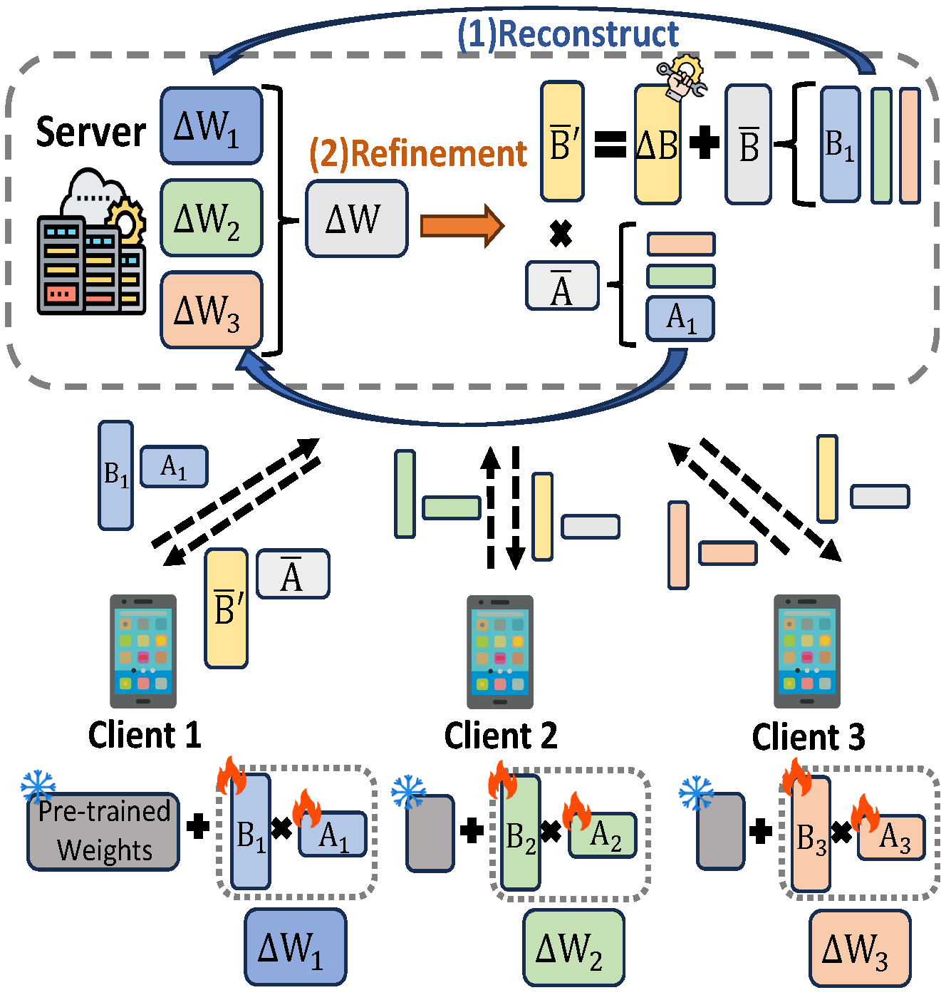
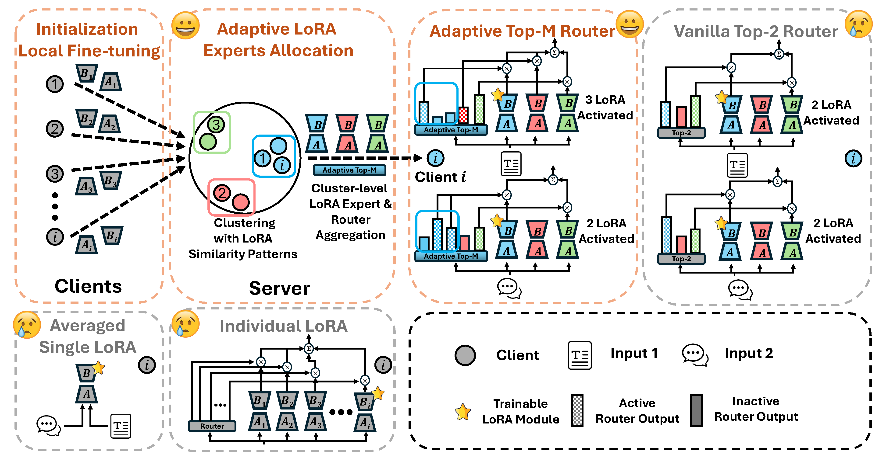
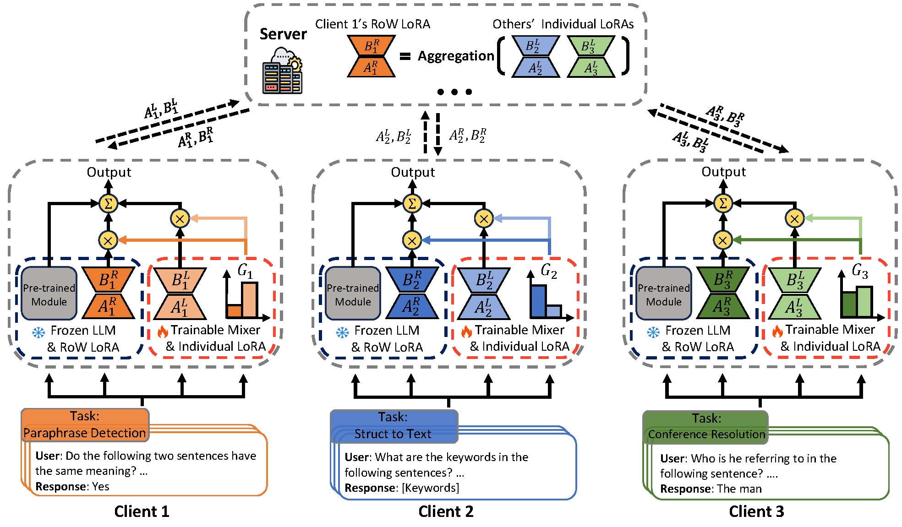

Federated Parameter-Efficient Fine-Tuning of Foundation Models
Research Vision
The landscape of artificial intelligence is undergoing a fundamental transformation. Today's dominant paradigm of centralized training in massive GPU datacenters requires collecting vast amounts of data into a single location. However, the most valuable data for training AI systems often cannot be centrally aggregated. Medical records remain locked in hospital systems due to privacy regulations. Corporate data stays siloed within organizations due to competitive concerns. Manufacturing sensor data cannot leave factory premises. Personal information on smartphones must remain on devices to protect user privacy. This represents an enormous volume of distributed data that remains largely untapped for AI development, even as it holds the key to advances in healthcare diagnostics, personalized services, industrial optimization, and countless other domains.
Federated learning offers a radically different approach. Instead of bringing data to the model, we bring the model to the data. In this paradigm, AI training occurs where data naturally resides: in hospitals, corporations, factories, or even on individual devices. Each location trains the model on its local data, and only the learned updates are shared and aggregated to create a global model. The raw data itself never leaves its original location. This enables collaborative AI development while preserving data privacy and sovereignty, making it possible to leverage otherwise inaccessible training data across organizational and geographical boundaries.
Yet applying federated learning to modern foundation models introduces critical technical challenges. The large-scale models powering today's AI breakthroughs contain billions of parameters, making traditional fine-tuning computationally prohibitive, especially on resource-constrained edge devices or organizational infrastructure. Parameter-efficient fine-tuning methods, particularly Low-Rank Adaptation or LoRA, have emerged as a solution by training only a small fraction of parameters while achieving comparable performance. LoRA works by adding lightweight adapter modules to frozen foundation models, reducing training costs by orders of magnitude.
However, combining LoRA with federated learning is far from straightforward. When multiple organizations or devices train their own LoRA adapters on heterogeneous local data and these adapters are aggregated on a central server, several fundamental questions arise. How should we aggregate these low-rank updates to preserve both global knowledge and local specialization? When clients have vastly different data distributions, such as medical institutions specializing in different diseases or manufacturers with distinct product lines, should we force all clients to share a single global adapter or enable personalized adaptation? How can we efficiently allocate computational resources when clients have different capabilities and data characteristics? These questions define a critical research direction at the intersection of federated learning and parameter-efficient fine-tuning.
This research program systematically addresses these challenges through three complementary perspectives. First, we examine the mathematical foundations of LoRA aggregation in federated settings, revealing and correcting biases that emerge when standard federated averaging is naively applied to low-rank matrices. Second, we explore how to leverage data heterogeneity as an asset rather than an obstacle, developing adaptive mechanisms to allocate specialized LoRA experts to different client clusters and enabling clients to selectively utilize the most relevant experts for their local tasks. Third, we investigate personalized federated fine-tuning strategies that allow each client to maintain individual adaptation while still benefiting from collaborative learning, fundamentally rethinking the balance between local and global knowledge.
The ultimate vision is to enable a new generation of AI systems that can be trained on distributed, privacy-sensitive data at unprecedented scale. This includes unlocking collaborative model development across hospitals for better diagnostics, across corporations for improved fraud detection, across manufacturing facilities for predictive maintenance, and across edge devices for personalized services. By making federated fine-tuning of foundation models practical, efficient, and effective, this research direction aims to democratize access to AI capabilities while respecting data privacy, regulatory compliance, and organizational boundaries. As AI regulation increasingly mandates data localization and privacy protection, federated parameter-efficient fine-tuning represents not just a technical innovation, but a necessary evolution in how we develop and deploy AI systems in a privacy-conscious world.
LoRA-FAIR: Federated LoRA Fine-Tuning with Aggregation and Initialization Refinement
IEEE/CVF International Conference on Computer Vision (ICCV), 2025
Foundation models (FMs) achieve strong performance across diverse tasks with task-specific fine-tuning, yet full parameter fine-tuning is often computationally prohibitive for large models. Parameter-efficient fine-tuning (PEFT) methods like Low-Rank Adaptation (LoRA) reduce this cost by introducing low-rank matrices for tuning fewer parameters. While LoRA allows for efficient fine-tuning, it requires significant data for adaptation, making Federated Learning (FL) an appealing solution due to its privacy-preserving collaborative framework.
However, combining LoRA with FL introduces two key challenges: the Server-Side Aggregation Bias, where server-side averaging of LoRA matrices diverges from the ideal global update, and the Client-Side Initialization Lag, emphasizing the need for consistent initialization across rounds. Existing approaches address these challenges individually, limiting their effectiveness. We propose LoRA-FAIR, a novel method that tackles both issues by introducing a correction term on the server, enhancing aggregation efficiency and accuracy. LoRA-FAIR maintains computational and communication efficiency, yielding superior performance over state-of-the-art methods.

Adaptive LoRA Experts Allocation and Selection for Federated Fine-Tuning
Neural Information Processing Systems (NeurIPS), 2025
Large Language Models (LLMs) have demonstrated impressive capabilities across various tasks, but fine-tuning them for domain-specific applications often requires substantial domain-specific data that may be distributed across multiple organizations. Federated Learning (FL) offers a privacy-preserving solution, but faces challenges with computational constraints when applied to LLMs. Low-Rank Adaptation (LoRA) has emerged as a parameter-efficient fine-tuning approach, though a single LoRA module often struggles with heterogeneous data across diverse domains.
This paper addresses two critical challenges in federated LoRA fine-tuning: 1. determining the optimal number and allocation of LoRA experts across heterogeneous clients, and 2. enabling clients to selectively utilize these experts based on their specific data characteristics. We propose FedLEASE (Federated adaptive LoRA Expert Allocation and SElection), a novel framework that adaptively clusters clients based on representation similarity to allocate and train domain-specific LoRA experts. It also introduces an adaptive top-M Mixture-of-Experts mechanism that allows each client to select the optimal number of utilized experts. Our extensive experiments on diverse benchmark datasets demonstrate that FedLEASE significantly outperforms existing federated fine-tuning approaches in heterogeneous client settings while maintaining communication efficiency.

FedALT: Federated Fine-Tuning through Adaptive Local Training with Rest-of-World LoRA
AAAI Conference on Artificial Intelligence (AAAI), 2026
Fine-tuning large language models (LLMs) in federated settings enables privacy-preserving adaptation but suffers from cross-client interference due to model aggregation. Existing federated LoRA fine-tuning methods, primarily based on FedAvg, struggle with data heterogeneity, leading to harmful cross-client interference and suboptimal personalization.
In this work, we propose FedALT, a novel personalized federated LoRA fine-tuning algorithm that fundamentally departs from FedAvg. Instead of using an aggregated model to initialize local training, each client continues training its individual LoRA while incorporating shared knowledge through a separate Rest-of-World (RoW) LoRA component. To effectively balance local adaptation and global information, FedALT introduces an adaptive mixer that dynamically learns input-specific weightings between the individual and RoW LoRA components, drawing conceptual foundations from the Mixture-of-Experts (MoE) paradigm. Through extensive experiments on NLP benchmarks, we demonstrate that FedALT significantly outperforms state-of-the-art personalized federated LoRA fine-tuning methods, achieving superior local adaptation without sacrificing computational efficiency.

Team Members
Jieming Bian
University of Florida
Lei Wang
University of Florida
Letian Zhang
Middle Tennessee State University
Jie Xu
University of Florida
BibTeX
@inproceedings{lorafair2025,
title={LoRA-FAIR: Federated LoRA Fine-Tuning with Aggregation and Initialization Refinement},
author={Bian, Jieming and Wang, Lei and Zhang, Letian and Xu, Jie},
booktitle={Proceedings of the IEEE/CVF International Conference on Computer Vision (ICCV)},
year={2025}
}
@inproceedings{fedlease2025,
title={Adaptive LoRA Experts Allocation and Selection for Federated Fine-Tuning},
author={Wang, Lei and Bian, Jieming and Zhang, Letian and Xu, Jie},
journal={The Thirty-ninth Annual Conference on Neural Information Processing Systems (NeurIPS)},
year={2025}
}
@inproceedings{fedalt2026,
title={FedALT: Federated Fine-Tuning through Adaptive Local Training with Rest-of-World LoRA},
author={Bian, Jieming and Wang, Lei and Zhang, Letian and Xu, Jie},
booktitle={The Fortieth AAAI Conference on Artificial Intelligence (AAAI)},
year={2026}
}